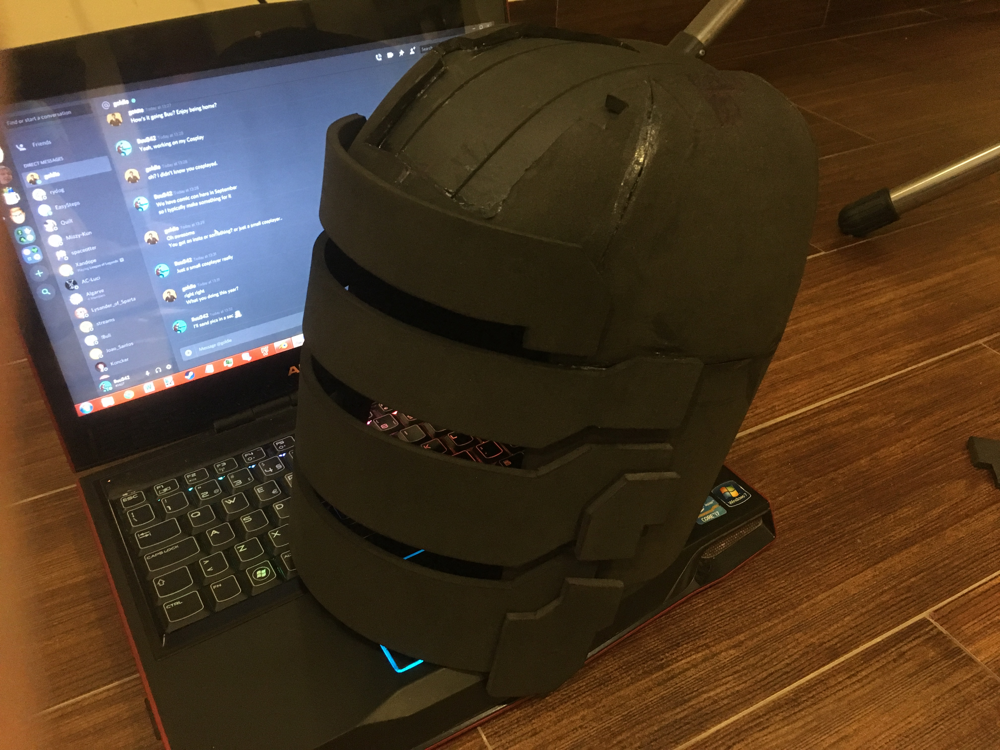
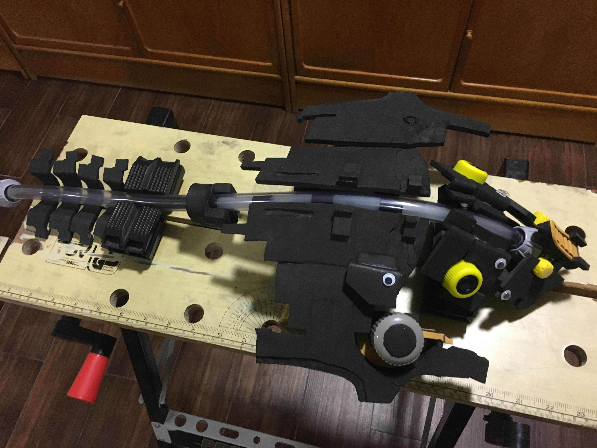
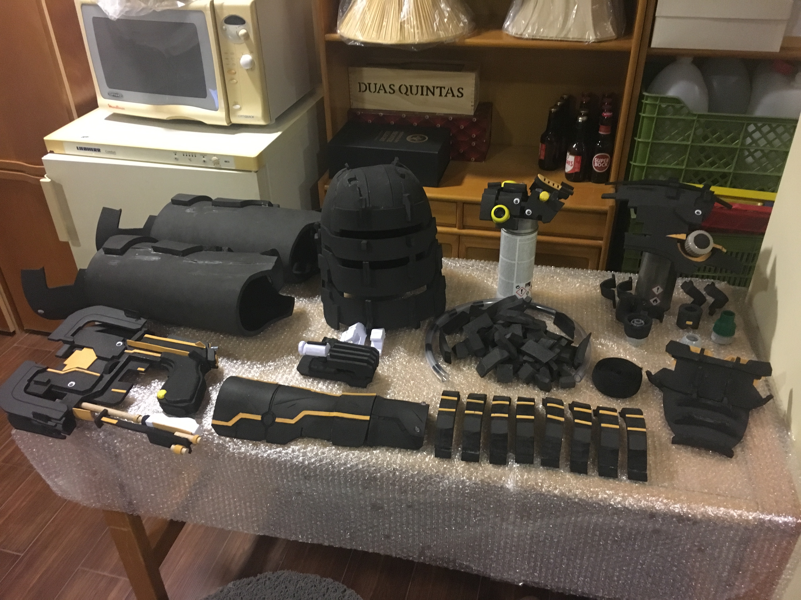
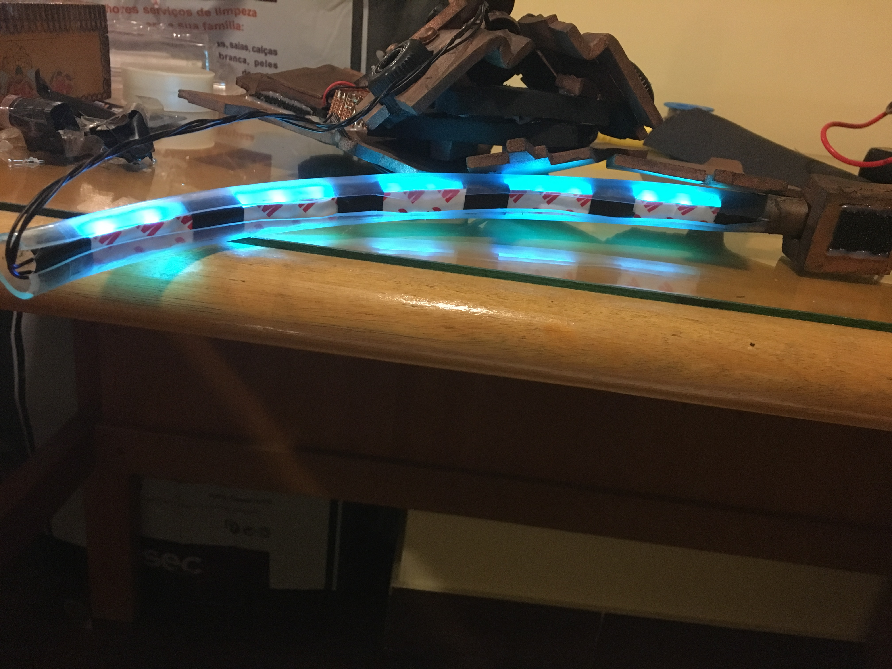

Making Isaac Clarke's Level 3 Suit from Dead Space
Published: September 25, 2024
Tags: Cosplay, Blender, Crafts, Soldering, Dead Space, Horror
So, for Lisbon Comic Con in 2019, I decided to make a new cosplay instead of reusing my previous one. This time, I was mostly on my own as my friends didn't feel like dedicating their entire summer to making another costume (I don't blame them). Since I gave myself a bit more time to work on this one (about three months), I decided to go for something a bit more complicated.
I have previously covered my cosplay build in an Imgur album, but now that I have this wonderful website, I decided transition that information here.
Materials
Here is a list of the materials I used:
- 1cm thick EVA foam
- 0.5cm thick EVA foam
- 0.2cm thick EVA foam
- 1.2cm diameter acrylic tube
- 0.8cm diameter acrylic tube
- Plastic hose connection pieces
- Small Magnets
- Push button
- Three 12v batteries
- Three blue LEDs
- 12V LED strips
- Furniture cups
- Googly eyes
- Electrical cable
- 1cm wooden dowel
- Small nails
- Sewing needles and line
- Artifical leather
- Light gray fabric
- Velcro strips
- Polyethylene webbing
- Foggy plastic (used to bind books)
- Aluminum Foil
- Paper
- 2cm thick styrofoam
I also got myself some clothes for this costume:
- Horseriding boots
- Dark-gray sweatpants
- Black wool gloves
- Leather belt
- Grey wool jacket
The list of paints:
- Black Plasti Dip spray paint
- Copper spray paint
- Silver spray paint
- Bronze spray paint
- Gold spray paint
- Dark orange spray paint
- Black acrylic paint
- Red acrylic paint
I used the following tools. I already owned all of these (except a Dremel), so it didn't incur any significant extra cost:
- x-acto knife
- Lots of x-acto knife blades
- Heat gun
- Hot glue gun
- Wood glue
- Dremel
- Handsaw
- Various paint brushes, from small to large
- Poly Max
- Electrical tape
- Painters tape
- Soldering iron
- Pens
- Rulers
Finally, the following software was also used:
- Blender
- Paint.Net
- Photoshop
- Microsoft Word
Getting a Reference
For starters, you're going to need a reference. I chose to rip the original model from the game using a program called Ninja Ripper. This allowed me to import the model into Blender to get a full 360 view of the model.
This is a lot better than using in-game screenshots, and it had the added benefit of letting me use the model's UV map as stencils for translating the parts over to foam. UV's aren't always perfect, and might require some tweaking to fix distortion that happens naturally as a result of trying to turn something 3D into something 2D (just ask people who work on map projections how much of a pain it can be!), but they are close enough. When I had the UV maps, I would estimate their size by measuring against my body with a ruler while using the Blender model as a reference.
This is the UV map for the little screen on Isaac's chest.
Afterwards, the UV maps were transferred to Paint.Net, where I could set the pixel to centimeter ratio to fit my measurements, and then paste the image (sometimes needing to be cut into pieces) into a Word Document to print. I had to use Word as a middleman for printing because Paint.Net's printing options would stretch the images, and I could not find a way to turn that off.
Foam Cutting
Once the stencils were printed and cut out, they were transferred onto 0.5cm EVA foam with a pen, which were then cut out with an x-acto knife by hand.
Same pieces, now cut out in foam.
It's important to use a sharp knife because a dull one will create lots of jagged edges, which means you will need to spend more time cleaning up the pieces after they've been cut.
0.2cm EVA foam was used for some details of this piece. Originally the screen piece (3rd piece on top right) was made of 0.5cm EVA foam as well, but it was then remade in 0.2cm EVA foam because I hadn't realized that it was a much thinner piece. To form the curved shape of the pieces, a heat gun was used. You make circular motions with the heat gun while forcing the piece into shape. Avoid keeping the heat gun in the same spot for too long or you will melt/burn the foam. To glue the pieces together, I used hot glue.
The televisor piece after being heat formed and glued together.
The televisor can rotate on its axis, with the help of two nails. The support foam that is holding the televisor also has nails on the bottom, because I predicted that the weight of the TV wouldn't hold with only hot glue (and my prediction was right!). Later, a hole was cut on the televisor to fit the "hologram". This was done towards the end of the project, so it is not in the picture above.
Here is the right arm piece, together with the stencils that were used to make it:
The semi spheres on the front piece are those little rubber cups that are usually glued to furniture to prevent them from scratching surfaces. Strips of 0.2cm EVA foam were used for detailing. Scratches were made on the pieces using an x-acto knife and then they were opened with the help of the heat gun. The more heat you give it, the wider the cut becomes. Depth was given to certain parts of the piece by carefully cutting them out with an x-acto knife, as I did not own a Dremel when I made this piece (trust me, a Dremel will do a much better and cleaner and safer job than picking away with a knife).
Making the Helmet
Helmets are difficult to make with guess work because everyone's head shape is quite different, so I recommend making a mould of your head. I had a friend cover my head in aluminum foil, and then it was covered in painter's tape to keep the shape.
I drew some eyes as a reference, and then removed the mould out of my head. To do this, make as small a cut as you can on the back of the mould, enough so that your head can be taken out without significantly altering the shape of the mould.
After removal, the shape of the piece was refined with a pair of scissors, and the cutting joints were approximated with a pen. Several registration marks were placed to help join the pieces together with the foam later on. These drawings only need to be made to half of the helmet, as the other half can just be mirrored.
Now, you can't just cut out the pieces of the helmet and transfer them directly to the foam, because foam has thickness and that will shrink the helmet. So the stencil piece must be made slightly bigger. I chose to take photos of the pieces on a cutting board:
Doing it on a cutting board has two benefits. The first is that I can tell how big the piece is, as each square in the grid is 1cm by 1cm. The second benefit is that your camera's lens, as a result of being curved, introduces some distortion to the final image. The grid lets me correct the lens distortion in Photoshop.
After digitizing and retracing, the pieces were then all increased in size by a factor of 5% (my rule of thumb is one percent per 0.1cm of thickness), printed out, traced onto foam, and cut.
Those horizontal ticks that are spread across the edges are important, they're what's gonna help you line of the foam when you glue everything together. The stencil for the bottom part of the helmet was made longer than the original piece because I realized a bit late that the helmet was longer than I had cut it.
With all the pieces cut, you just gotta put 'em together:
The stencil for the bottom part of the helmet was made longer than the original piece because I realized a bit late that the helmet was longer than I had cut it.
I drew the middle section with a pen by estimating it from the 3D model. It would obviously have been more accurate if I had used the PC to make a proper stencil, but I was still figuring out what I was going to do in this stage.
Cut out with an x-acto knife.
Part of the helmet's front part was also trimmed as the piece was too long (you can see the pen marks for where I applied the cuts in the previous photo).
The hole was then covered with a foam piece that was measured by hand. The two straight gaps were done in the same way as the scratches on the arm piece, by scoring the foam with an x-acto knife and then passing the heat gun over the cuts. The more heat you give it, the bigger the gap becomes. As I warned before, be very careful not to apply too much heat at once to a single spot as that will melt and or burn your foam permanently.
The front visor pieces were taken from the model's UV map, after having their measurement estimated by hand with the finished helmet. I had also found that the bottom part of the helmet was too long and I had to trim it down. Obviously when it comes to trimming parts of your foam to fit you better, do it in small increments, because it's not easy to put foam back once it's been cut!

All sorts of details were added to the helmet using 0.5cm EVA foam and 1.0cm EVA foam. Bevels were made with an x-acto knife by hand and then sanded by hand as well.
The details on the back were made with 0.2cm EVA foam. The tube on the back of the helmet is an electrical cable that was cut and just bent into shape.
Making the Plasma Cutter
The Plasma Cutter was done slightly differently from all the other pieces, as it was composed of multiple layers of foam rather than being big pieces. I basically found a side view image of the cutter, and then I cut out all the detail shapes and transferred them off to foam. Magnets were placed in two different places so that the magazine could be removed.

An extra gap was left for the trigger in order for it to be shootable.
The electronics for the gun were very simple. A push button was wired to three blue LEDs, in series, which were then wired to a 12V battery (which is housed within the gun's grip). The right side of the gun's grip has screws in place to allow for easy access to the battery, should it need to be replaced.
Originally, when testing, I found that the trigger would tend to fold slightly and jump out, so as a result I decided to stick a metal wire through the trigger and gun in a straight line.The wire was held in place by having a nail on opposite ends and bending the wire in a loop around the nails.
I was afraid that the tension of the spring would cause it to dig into the foam, so as a result I broke two used xacto knife blades until they were the size of the back of the trigger. These were then glued to the back of the trigger as well as the back of the hole (on the opposite end of the spring) to ensure the foam wouldn't be damaged from all the clicking.
Fitting all the pieces at the end was no easy task, especially because the magnets took up a lot of space. This is a shame because I wished to have a metal rod inside the gun to provide some extra support and rigidity, but couldn't find a place to fit it...
Showcasing the LEDs of the Plasma Cutter before it was glued together.
The spring was placed inside the metal rod that forces the trigger to slide horizontally. You can also (barely) see in the video the location where I stuck the nails which the metal rod then loops around to keep it secure in place.
The detail on the fins of the Plasma Cutter were done by scoring the foam with an x-acto knife and applying heat to them to open up the cuts. This unfortunately also caused the thin ends of the fins to crease, next time I should protect these with aluminum foil.
Then it was just a matter of adding the rest of the details.
A 1cm wooden dowel was used for the bottom piece, googly eyes were used to fake rivets, some spare pieces of plastic I found lying around and a nail were used as small details for the magazine, the grip was beveled using a Dremel, and the little yellow cap on the bottom of the grip were caps used in plastic hoses (which were sawed in half to be at the same height as the grip).
The process for making the end of the antenna (covered in paper in the picture) will be explained in this next chapter.
Making the Kinesis Module
It's really more of the same: Look at the UV map, make some stencils, transfer them to foam.
The thing to highlight here is that the Kinesis module has some very weird shapes in it that aren't easy to do in this sort of flat foam.
Notice the blue pieces on the bottom, these were cut out of 2cm thick Styrofoam rather than EVA foam (don't get the white styrofoam made of lots of different balls, those will break apart very easily. Get the thick blue one shown in the photos). This was the same material used to make the end of the antenna of the Plasma Cutter.
This material is awesome because it's very rigid and easy to shape, and with a very tiny amount of sanding becomes really smooth. However, if you spray paint these they WILL melt. As a result, they must be covered in paper, which limits how much of this material I can use on the project (especially since I had a month left until Comic Con at this point of the project!). The paper was applied using wood glue.

Then everything was glued together to create the final kinesis module:
Like previously, the piece below the styrofoam piece was beveled using a Dremel.
Making the RIG
The foam meta hasn't really changed. UV's, stencil, transfer, cut, glue.
The RIG's pieces does have an interesting factoid, which is that in order to get 90 degree shape, you have to cut out a ridge on the back of the foam to give it space to bend into (and be sure to apply some glue there too). If you don't, the foam will likely just unfold back into a stretched shape since it won't be able to fight the compression force.
But yeah, outside of that, it's more of the same.
Depth was given to the pieces by using a Dremel. The plastic caps were from hose caps, and their holes were covered with EVA foam and were given rubber rings to provide detail. The tube that forms the health gauge was made from 1.2cm acrylic hose.
The inner tube was made from 0.8cm acrylic hose. Its foggy look was made by sanding the piece by hand, and the little black strips were made from electrical tape.
Make some detail pieces and glue everything together:

Armor Pieces
The level 3 suit has a lot of little armor pieces on the chest and back. 52 of them, in fact! That's all stuff you need to cut, shape, and sand.
These pices were beveled by hand with an x-acto knife (in hindsight, should have done that with a dremel). Originally I wanted to make these out of the styrofoam, but I ended up using the EVA foam because the deadline for Comic Con made it impossible for me to cover all the pieces in paper by myself.
The shoulder armor pieces are made from 1cm thick EVA foam glued to 0.5cm EVA foam. The pieces were heat formed individually before gluing. After scoring the ends to be able to fold the tips of the shoulder pieces, I estimated by hand 3 straight lines which would then need to be removed for the final shape of the piece.
Using the dremel, all 8 shoulder pieces were sanded individually. This would have been much easier and much better done if I owned a sanding belt.
I would like to bring up that it's important that you read the instruction booklets that come with your tools. I actually managed to burn out the dremel I was using because I kept it on for longer than the booklet recommended. So I had to go out of my way and buy a second one, which increased the budget of the project further. Seriously, read the booklet.
All pieces were glued and had details added to them.
Legs
Not much to say here either. These were made from the 1cm foam, the knee guards from the thinner 0.5cm foam, which were scored and heated for detail, and a googly eye was added for a rivet.
There is one thing about them which I do sorta regret, which was that I glued the things shut as I wanted to avoid seams on the sides. Honestly, just make them openable and fasten them together with some velcro. These are a huge pain in the ass to put on because I need to twist my foot in a very specific and uncomfortable way.
Painting

With basically everything ready, it was time to paint. But first, we need to do two things...
First, we have to make these pieces look battle damaged. I've already explained the process when I made the right arm armor pieces: score the foam and use a heat gun to make the gaps larger. However this time I had a Dremel, and I can tell you that a Dremel really comes in handy for doing battle damage. I always fear that I'm cutting in too deep with an x-acto knife...
Second, we need to fill the seams with something. I used a product called Poly Max to do the job, as well as to correct excessive cuts and naturally ocurring holes in the foam. This paste tends to shrink when dried, so you need to do multiple coats or the seams will remain visible. I only did two because I was running out of time, and so the seams weren't completely covered in the final product...
All pieces were painted with 3 Coats of black Plasti Dip spray, which is used as the base coat of paint, but also used to hide mistakes and seams on the foam, as Plasti Dip levels when dried. Afterwards, the pieces were given their respective color with spray paint, be it silver, copper, gold, bronze, or dark orange.
As you can see, it kinda looks like crap. Everything is too shiny! So to make the pieces look worn, a black wash was applied. This is done by covering every single piece with black acrylic paint, and then letting it dry for two minutes (not much longer, we don't want the paint to fully dry or the piece will stay black forever!). After the two minutes, the acrylic paint was rubbed off with a paper towel. This created the worn, battle damaged look that I wanted the pieces to have. The cool part about applying a black wash to the pieces is that if you don't try to clean the crevices when you're removing the paint, the black paint stays in the gaps and really brings out the scratches on the costume.
Just look at the difference:
Do this for everything, and voila:
For the gun, I painted on some soot to the shooty part using a techinque called drybrush.
Regarding the helmet's visor, I used that foggy plastic that's used to bind the back of books. A very small gap was left on the second strip of plastic so that I could see with the helmet on. It's definitely not great, but the plan was never to wear the helmet at all times anyway.
Let There be Light
Isaac's suit has a lot of lights on it, which requires soldering. Unfortunately, at the time I didn't own a soldering station, so I had a friend of mine called JoATILDE_SYMBOLo Santos design the circuitry and put it all together.
Two of these small boards were made, one for the helmet's lights, and one for the rest of the suit. It was designed like this to allow me to take off the helmet without having to worry about disconnecting something.
The lights in the helmet are composed of an LED strip that's glued in between the visor pieces, out of view so that they don't show up behind the plastic. Since the lights on the RIG are cyan and not straight blue, it needs a mix of blue and green light (hence why an actual circuit is needed). These are powered by 8 AA batteries (for a total of 12 volts), which are attached to the top of the helmet. I can keep the LEDs on for half a day before they start to die out (the lights will start turning green when this happens), so I typically turn the lights off with the push button unless I'm posing for photos or I'm indoors.
For the spine, I originally wanted to shove the LED strip into the tube to stay out of sight, but unfortunately the tube wasn't wide enough and this would damage the strip. So instead, I cut the tube at the back and glued the strip there to hide it.

The circuitry and batteries for these lights are glued behind the rig, and there's a little bit of cable which goes through the back of my neck and into my left arm. This is because there's an LED on the hand (for the kinesis module), and because that's where I put the push button to toggle everything.
At Comic Con, I made the unfortunate discovery that the weight of all of these things would cause the RIG to sag in a given direction. I haven't gotten around to fixing this yet... The obvious solution is to add a counter weight to the other side of the rig, but I intend on adding some more velcro to ensure it stays correctly angled at all times.
Vest and Other Details
The last big peice of detail that's missing is the fact that Isaac's suit has a mixture of fabrics in it, including leather (don't worry I used fake leather). I do not own a sewing machine, and making all of the pieces I needed would take too long by hand... So I opted to go to a tailor and I asked them to sew the vest and leg pieces together for me.
The polyethylene webbing strips were hand sewn, however. Armor pieces were then attached using hot glue and nails, and a gray sleeve fabric was also hand sewn on. The spine pieces were sewn in place to allow them to be somewhat flexible when the RIG is being worn.

Because the foam was too thin to fit LED's inside, I chose to use a blue piece of plastic from an old binder cut into shape to make the hologram. Glow paint was added to the back of it to provide luminescence when the costume is worn in darker places. Unfortunately, it seems that the glow paint didn't really work very well, but it was worth a shot anyway!
For attaching stuff to the costume, pieces were sewn in, glued, nailed, anything really. I also used a surplus amount of velcro to attach things to the fabrics.

Vest and Other Details
Putting everything together for the big day:
Simply put, this costume is badass. It's very fun to wear, but it has a major downside. It's hot. Using a wool jacket was the closest thing I could find to match the sort of texture that Isaac has in his undergarment, but good lord will you sweat out your bodyweight. Please drink plenty of water. Pieces on the RIG's spine also do have the tendency to unvelcro themselves, so having a squire follow you around while you wear it is recommended.
But I couldn't be happier with it.
While Dead Space isn't as popular a franchise as League of Legends, I can tell you that the few people who recognized my character were ecstatic to see the costume, with full on gushing as soon as they saw the LEDs turn on.
A funny anecdote, but one time I was meeting up with a friend from university in Algés, and he mentioned how he recognized the area but wasn't sure when he'd been here. I offhanded that it might have been at an event in the Passeio Maritimo, such as Comic Con. He said that yeah, it was Comic Con, he remembered the event being kinda crappy, but the major highlight for him was seeing someone in a Dead Space costume. Funny how small the world is, eh?
If you want to use any of the stencils that I made for this project, you can download them here. Just be wary that they are shaped for my body, so make sure you resize them to fit your needs!